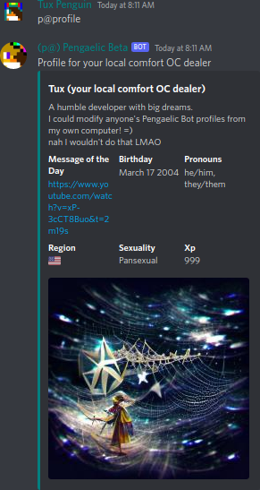

Configure a custom profile for yourself!
p!profile
p!profile get <user>
p!profile bio [text]
p!profile bday [date]
p!profile color [hexcode]
p!profile image [file or url]
p!profile motd [text]
p!profile nick [text]
p!profile pronouns [text]
p!profile region [country code]
p!profile sexuality [text]
